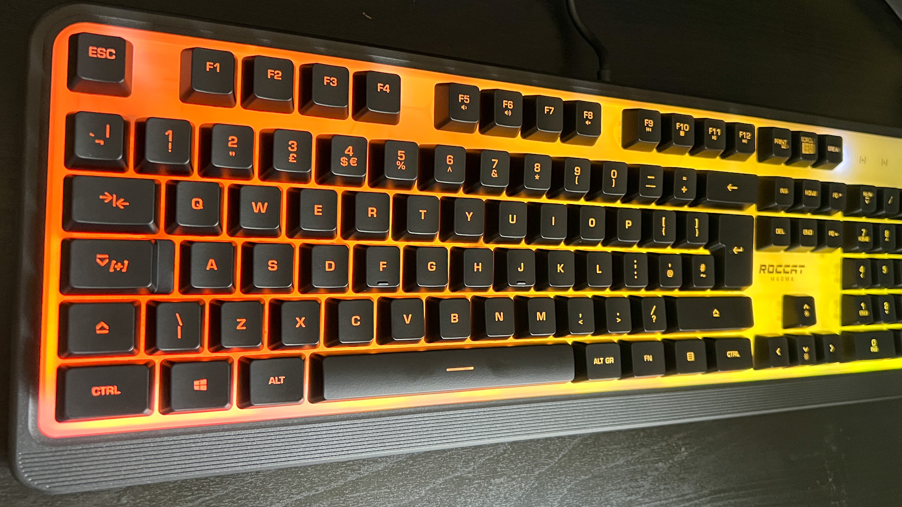

What is a keyboard?
A keyboard is a peripheral device that features a series of keys which, when pressed, send signals to a computer or other device to register input. These signals are then interpreted by the device's software to produce characters on a screen or execute specific commands.
Types of Keyboards
Keyboards are essential input devices used in various computing and typing tasks. Over the years, they have evolved into a diverse range of options, each catering to different user preferences and needs. Whether you're a casual typist, a professional gamer, or seeking ergonomic solutions, there's a keyboard type that suits your requirements.
Mechanical Keyboard
Known for their tactile feedback and distinct sound, mechanical keyboards are a favorite among enthusiasts and gamers alike. They feature individual mechanical switches beneath each key, providing a responsive and satisfying typing experience.

Membrane Keyboard
Membrane keyboards are commonly found in standard desktop setups. They use rubber dome switches to register key presses, offering a more silent typing experience compared to mechanical keyboards. While typically more affordable, they may lack the tactile response and durability of mechanical keyboards.
How they are made
8. Testing and Quality Control
The assembled keyboards undergo rigorous testing to ensure each key functions correctly, all features work as intended, and the keyboard meets quality standards.
Quality control inspectors check for cosmetic defects, functionality issues, and adherence to design specifications.